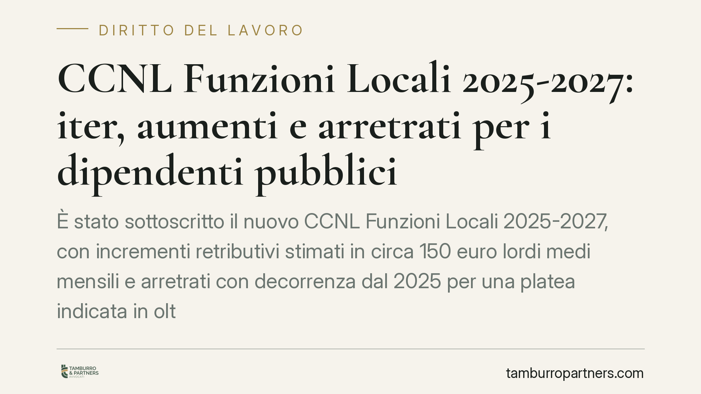

CCNL Funzioni Locali 2025-2027: iter, aumenti e arretrati per i dipendenti pubblici
È stato sottoscritto il nuovo CCNL Funzioni Locali 2025-2027, con incrementi retributivi stimati in circa 150 euro lordi medi mensili e arretrati con decorrenza dal 2025 per una platea indicata in oltre 400mila dipendenti. Al di là dei numeri, ancora in gran parte stimati, conta capire quando e come maturano le differenze e quali strumenti tutelano il lavoratore pubblico.

Il fatto
L'ARAN (Agenzia per la Rappresentanza Negoziale delle Pubbliche Amministrazioni) e le organizzazioni sindacali hanno definito il nuovo contratto collettivo nazionale di lavoro del comparto Funzioni Locali per il triennio 2025-2027. Il contratto riguarda il personale non dirigente di Comuni, Province, Città metropolitane e altri enti locali.
Una premessa di metodo è doverosa. Le cifre che circolano — un incremento medio di circa 150 euro lordi mensili e una platea di oltre 400mila dipendenti — sono stime, non dati definitivi riferibili alla singola posizione. L'importo effettivo varia in base all'area di inquadramento, al differenziale economico e all'anzianità. Il titolo di questo contributo parla volutamente di «iter, aumenti e arretrati» proprio per non promettere un dato uniforme che il testo contrattuale, per sua natura, articola su più profili.
Inquadramento normativo
La contrattazione collettiva nel pubblico impiego è governata dal D.lgs. 165/2001. L'art. 40 individua le materie rimesse alla contrattazione; l'art. 46 attribuisce all'ARAN la rappresentanza negoziale delle amministrazioni; l'art. 47 disciplina il procedimento di stipulazione, con un passaggio cruciale: l'ipotesi di accordo è sottoposta al controllo sui costi da parte della Corte dei conti. Solo dopo la certificazione positiva si perfeziona la sottoscrizione definitiva, da cui discende l'esigibilità concreta degli istituti economici.
Questo spiega perché, fino al completamento dell'iter, le voci economiche restino sul piano della previsione. La sottoscrizione definitiva è il momento che rende azionabili i diritti retributivi.
Arretrati e tassazione
Gli arretrati sono le differenze retributive maturate per il periodo compreso tra la decorrenza contrattuale (il 2025) e l'effettiva erogazione. Non si tratta di una voce aggiuntiva, ma del recupero di quanto già maturato e non ancora corrisposto.
Sul piano fiscale, gli arretrati di lavoro dipendente relativi ad anni precedenti sono di norma soggetti a tassazione separata ai sensi dell'art. 17 TUIR. La determinazione dell'imposta avviene secondo l'art. 21 TUIR, che fissa il criterio di calcolo dell'aliquota applicabile ai redditi assoggettati a tale regime. La ratio è evitare che somme riferite a più annualità, se sommate al reddito dell'anno di percezione, facciano scattare scaglioni più elevati. Si tratta di una sintesi: l'applicazione concreta dipende dalla composizione reddituale del singolo contribuente.
Implicazioni pratiche: i crediti retributivi
Per il dipendente pubblico il nodo operativo è duplice: verificare l'esattezza di quanto liquidato e presidiare i termini di prescrizione.
Sul primo punto, non è infrequente che il calcolo degli arretrati presenti scostamenti legati a inquadramento o periodi di servizio: un controllo del conteggio è sempre opportuno.
Sul secondo punto, occorre una precisazione tecnica. I crediti retributivi si prescrivono in cinque anni ai sensi dell'art. 2948 n. 4 c.c. Nel pubblico impiego cosiddetto «privatizzato», però, il decorso della prescrizione presenta profili peculiari: secondo l'orientamento della giurisprudenza di legittimità, la prescrizione non decorre in costanza di rapporto quando difetta una condizione di stabilità idonea a garantire il lavoratore contro il timore del recesso, con rilievo del momento di cessazione del rapporto *(profilo da verificare caso per caso alla luce della più recente giurisprudenza di legittimità sulla prescrizione nel rapporto privatizzato)*. È un tema delicato, che sconsiglia soluzioni standardizzate.
Il contenzioso tipico
La vertenza più ricorrente riguarda il recupero delle differenze non liquidate o liquidate in difetto. In questi casi assumono rilievo gli atti interruttivi della prescrizione: la diffida scritta inviata all'amministrazione — con valore di costituzione in mora ex art. 2943 c.c. — e, nel caso, il ricorso giurisdizionale. Un atto interruttivo tempestivo azzera il termine e lo fa ripartire, con effetto conservativo del credito. La cura di questi passaggi è spesso ciò che distingue una posizione tutelata da un diritto perduto per decorso del tempo.
Cosa fare in concreto
- Verificare l'avvenuta sottoscrizione definitiva e la certificazione dei costi da parte della Corte dei conti, presupposto dell'esigibilità delle somme.
- Controllare il cedolino in cui sono liquidati arretrati e nuove voci, confrontandolo con l'inquadramento effettivo.
- Conservare cedolini, atti di inquadramento e ogni documentazione utile a ricostruire i periodi di servizio.
- Monitorare i termini di prescrizione quinquennale, tenendo conto delle peculiarità del pubblico impiego privatizzato.
- Inviare una diffida scritta all'amministrazione in caso di differenze non corrisposte, quale atto idoneo a interrompere la prescrizione prima di valutare l'azione giudiziale.
---
Contributo informativo a cura di Tamburro & Partners Avvocati (Avv. Giuseppe Tamburro). Non costituisce parere legale.
Ogni storia di lavoro ha i suoi tempi.
Se gestisci HR e vuoi un confronto su contenzioso, ispezioni o licenziamenti, scrivi allo studio. Ti rispondiamo entro un giorno lavorativo.